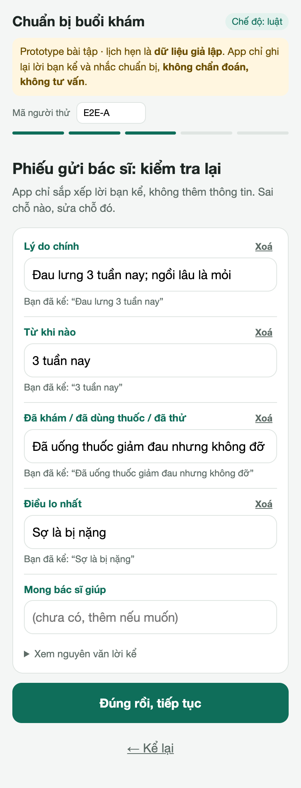
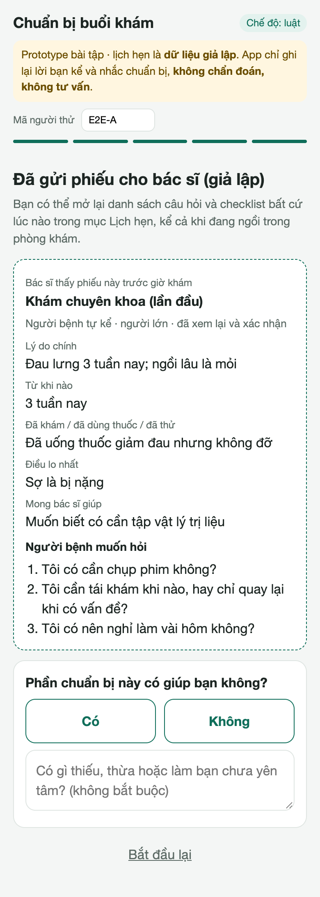

Vinmec × AI Thực Chiến · Bài tập 1 tuần
Chuẩn bị buổi khám:
nói hết, hỏi đủ, kể một lần
Khoảnh khắc: Đặt lịch, đoạn từ lúc đặt hẹn xong tới lúc gặp bác sĩ
Thái Hoài An · K3 · Lab Coach AI Thực Chiến · 10/2026
1 · Dùng thử app đã bác bỏ giả thuyết ban đầu
Giả thuyết ban đầu "không biết khám khoa nào" đã sai với app
- Form web bắt chọn chuyên khoa trước, nên mình làm prototype gợi ý khoa.
- Quay 2 video dùng app (8 phút) thì thấy MyVinmec đã có "Đặt lịch theo triệu chứng" và trợ lý AI MIA.
- So sánh 12 app trong và ngoài nước: tỷ lệ đặt sai khoa vốn dưới 1% (0,68% ở một bệnh viện Quảng Châu).
- Đặt 9 bước của luồng đi khám cạnh tính năng app đang có: đoạn đặt xong → gặp bác sĩ gần như trống.
Phát hiện phụ, đã ghi lại: form đặt lịch cho chọn mục đau thắt ngực như triệu chứng thường, trong khi MIA cảnh báo cấp cứu với cùng mô tả. Cảnh báo qua LLM mất khoảng 20 giây. 7 hướng đã cân nhắc nằm trong BACKLOG.md.
2 · Vấn đề, theo nghiên cứu
Vài phút với bác sĩ thường không đủ để nói hết
4/35
người bệnh nói ra đủ điều họ định nói. Ở cả 14/14 ca có hậu quả xấu, đều có ít nhất một điều không nói ra.
Barry et al., BMJ 2000
11 giây
trung vị trước khi bị ngắt lời. Bác sĩ chỉ hỏi người bệnh muốn bàn gì ở 36% lượt khám (chuyên khoa: 20%).
Singh Ospina et al., JGIM 2019
3 lần
người dùng MyVinmec mô tả cùng một vấn đề: danh sách triệu chứng, trợ lý MIA, ô "Lý do khám" (≤ 120 ký tự).
Dùng thử app, video 15/10
⚠️ Cập nhật từ phỏng vấn P1–P3: bao nhiêu người từng quên hỏi, kể lại mấy lần, chuẩn bị sai; 2 trích dẫn tiêu biểu; giả thuyết nào bị bác bỏ
3 · Journey map
Điểm đau dồn vào đoạn trước và trong lúc gặp bác sĩ
Đặt hẹn: ngày + lý do ≤ 120 ký tự→Tổng đài xác nhận→
Tự chuẩn bị ⚡→Kể lại ở quầy ⚡→
Gặp bác sĩ vài phút ⚡→Ra về mới nhớ điều quên hỏi ⚡
- Đ1 Kể đi kể lại (form, MIA, tổng đài, điều dưỡng, bác sĩ)
- Đ2–Đ3 Không biết cần chuẩn bị gì; chuẩn bị sai thì phải chờ hoặc quay lại
- Đ4–Đ5 Không nói hết điều lo; quên hỏi
- Đ6 Người kể không phải người bệnh (đi cùng bố mẹ, con)
- Đ7 Có dấu hiệu cấp cứu nhưng vẫn chờ tới ngày hẹn
⚠️ Bản giả thuyết. Gắn mã P vào từng điểm đau sau phỏng vấn; bỏ điểm không ai nhắc tới.
4 · Need statement (Biodesign)
Đúng vấn đề, chưa nói giải pháp
Cách để người bệnh, hoặc người thân đi khám cùng, đã đặt lịch khám chuyên khoa gặp tình huống chỉ có vài phút với bác sĩ, dễ quên nói hoặc quên hỏi điều quan trọng và không chắc cần chuẩn bị gì có thể đến buổi khám đã chuẩn bị đúng, nói hết và hỏi đủ, mà không phải kể lại nhiều lần.
Mức giải pháp
Workflow có một bước AI: xếp lời kể vào phiếu. Không phải agent
Ranh giới
Không chẩn đoán, không trả lời câu hỏi y khoa, không bắt buộc
Quyết định
Conditional go cho thử nghiệm · Not yet cho triển khai thật
5 · Học từ thế giới
3 best practice → 3 nguyên tắc thiết kế
Ubie AI 問診 (Nhật)Hỏi bệnh trước khám, kết quả chuyển thẳng vào bệnh án; hơn 1.800 cơ sở. Một bệnh viện báo thời gian hỏi bệnh → vào khám giảm 40 → 20 phút (số của nhà cung cấp).
→ Phiếu đi thẳng vào workflow bác sĩ, khung cố định
AHRQ QuestionBuilder (Mỹ)App của chính phủ Mỹ giúp chuẩn bị câu hỏi. Tổng quan 42 nghiên cứu: danh sách câu hỏi giúp hỏi nhiều hơn, nhất là khi bác sĩ đồng thuận.
→ Câu hỏi từ danh sách cố định; AI không trả lời
Epic MyChart (Mỹ)Phiếu trước khám ở người ≥ 65 tuổi: chỉ 26,4% điền, trung vị 14 phút; người bệnh nặng nhất không điền.
→ Ngắn, không bắt buộc, cho người thân điền hộ
Nguồn: ASCII.jp/PR TIMES; AHRQ; Sansoni et al., PEC 2015; Naimark et al., JMIR Form Res 2024. Chi tiết: 04-best-practice/
6 · Prototype
Kể một lần → phiếu cho bác sĩ
- Luật cấp cứu chạy trước AI, tức thì: có dấu hiệu là dừng, hiện nút gọi 115
- AI chỉ xếp lời kể vào 5 dòng; mỗi dòng phải kèm câu người bệnh đã kể, không có thì bỏ
- Người bệnh sửa hoặc xoá từng dòng trước khi gửi
- Câu hỏi: của người bệnh + danh sách cố định; checklist ghi rõ nguồn Vinmec hay đề xuất
- Không bắt buộc · điền hộ được · LLM lỗi → luật · log ẩn danh


7 · Đo và thử
Hai lớp kiểm chứng: bộ lời kể và người thật
24 lời kể giả lập (chế độ luật)
10/10
lời kể có dấu hiệu cấp cứu bị chặn0
dòng phiếu không có căn cứ hoặc có lời khuyên37/37
mục phiếu kỳ vọng có mặt
Con số lạc quan: bộ ca và luật do cùng một bên viết; 3 ca trượt đã được sửa sau lần chạy đầu. Guardrail LLM đã thử bằng đầu ra cài lỗi; chế độ LLM thật chưa đo.
Thử với 2–3 người (đóng vai theo thẻ K1–K5)
Đo: số dòng AI ghi bị sửa hoặc xoá · thời gian điền · số câu hỏi mang vào phòng khám · ai bấm "Để sau"
⚠️ Cập nhật từ test-log.md: ai thử, gặp gì, đã sửa gì; kết quả summarize_log.py
8 · An toàn, đạo đức và bước tiếp theo
AI chỉ ghi lại, người bệnh duyệt, bác sĩ quyết định
| Rủi ro (L×I ≥ 6) | Giảm thiểu |
|---|
| Bỏ sót cấp cứu | Luật cố định trước AI; không có đường từ màn cấp cứu sang tạo phiếu |
| AI thêm hoặc sai thông tin | Trích dẫn bắt buộc; người bệnh duyệt từng dòng; log số dòng bị sửa |
| AI trả lời câu hỏi y khoa | Câu hỏi chỉ chuyển cho bác sĩ; danh sách gợi ý cố định |
| Lộ thông tin sức khoẻ | Che SĐT, email trước khi log hay gửi LLM; ⏳ quy định ai đọc phiếu |
| Người lớn tuổi bị bỏ lại | Không bắt buộc; người thân điền hộ; tổng đài vẫn hỏi |
Backlog cho sprint 6 tuần
- B3 · Hiểu lời dặn sau khám: người bệnh quên 40–80% thông tin; cần bác sĩ duyệt bản viết lại
- B2 · Báo cho MyVinmec khoảng trống an toàn T1–T2 ở form đặt lịch
- B1 · Gợi ý chuyên khoa: module đã có, mở lại khi có số liệu tổng đài
9 · Dẫn dắt nhóm K4
Coach để mỗi bạn tự đi hết vòng, có bằng chứng thật
NhịpMỗi ngày một đầu ra rõ; check-in 15 phút mỗi tối; trễ 1 mốc nhắn riêng, trễ 2 mốc gọi 10 phút.
Gỡ kẹt bằng câu hỏi"Bạn đã dùng thử sản phẩm thật chưa?" · "Tỷ lệ gốc của vấn đề là bao nhiêu?" · "Bỏ chữ AI đi thì vấn đề còn không?"
Kiểm chất lượngChecklist 8 mục; hỏi ngẫu nhiên 1 chi tiết và yêu cầu chỉ ra nguồn. Không chấp nhận log hay trích dẫn bịa.
Bài học từ chính bài này: dùng thử sản phẩm thật trước khi viết giả thuyết; đổi hướng trước khi phỏng vấn thì gần như không mất gì.